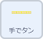
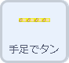
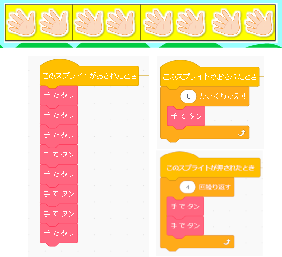
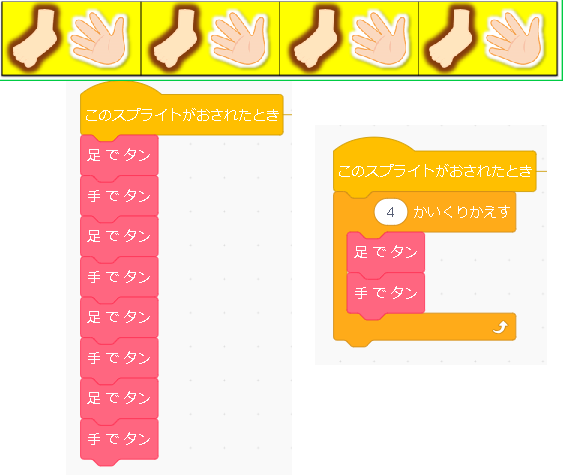

２拍子のリズムをつくろう


２拍子を作るプログラムです。すでに作成されたプログラムを使用し、追加でプログラムをします。とても簡単なブロックが用意されており、並べるだけではなく、繰り返しのブロックなども使用することができるので、１年生よりもう少しプログラムに近づけることができそうです。
プログラムするスプライト  |
|
|  |
プログラムをするスプライトは、用意されている帯状のスプライトです。それぞれのスプライトに、手でたん、足でたんというブロックが用意されているので、スプライトの表示に沿ったプログラムをしていきます。 それらを並べてリズムを作ります。 作った後は、このスプライトを押すことで実行できます。 |
|  |
手拍子のみの場合、左上のような組み立て方ができます。繰り返しのブロックを使えばすっきりできます。 手と足の２拍子リズムもまた、繰り返しが使えます。。今回はこの２パターン用意されていますが、 自分でリズムを考えて、新たに作るのもいいと思います。 また、新たにスプライトを作り、一曲分用意するのも面白いかもしれません。 |